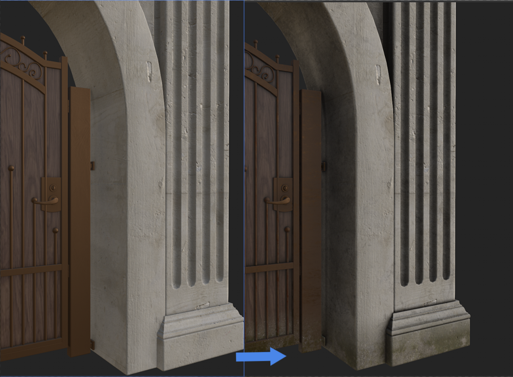

<title>Substance Bridge</title>
<link rel="preconnect" href="https://fonts.googleapis.com">
<link rel="preconnect" href="https://fonts.gstatic.com" crossorigin>
<link rel="stylesheet" href="https://fonts.googleapis.com/css2?family=Archivo:wght@700;800;900&family=IBM+Plex+Sans:wght@400;500;600&family=IBM+Plex+Mono:wght@400;500&display=swap">
<style>
  :root {
    --bg: #eef0f1;
    --surface: #e3e7e9;
    --surface-2: #ffffff;
    --border: #c5cbd0;
    --border-soft: #d5d9dc;
    --text: #1a2024;
    --text-muted: #5c6670;
    --accent: #a8481f;
    --accent-2: #3d5a6c;
    --accent-soft: rgba(168,72,31,0.10);
    --accent-2-soft: rgba(61,90,108,0.10);
    --mono-bg: #dfe3e5;
    --sem-done: #2f6b46;
    --sem-pending: #6d6a4d;
    --sem-limit: #9c5a17;
    --shadow: 0 1px 0 rgba(20,24,27,0.04);
  }
  @media (prefers-color-scheme: dark) {
    :root:not([data-theme="light"]) {
      --bg: #14181b;
      --surface: #1b2025;
      --surface-2: #20262b;
      --border: #2b3238;
      --border-soft: #262c31;
      --text: #e9e6e0;
      --text-muted: #9aa3aa;
      --accent: #dd8148;
      --accent-2: #7fa4b8;
      --accent-soft: rgba(221,129,72,0.14);
      --accent-2-soft: rgba(127,164,184,0.12);
      --mono-bg: #20262b;
      --sem-done: #5fb37e;
      --sem-pending: #a3a087;
      --sem-limit: #d99a4d;
      --shadow: none;
    }
  }
  :root[data-theme="dark"] {
    --bg: #14181b;
    --surface: #1b2025;
    --surface-2: #20262b;
    --border: #2b3238;
    --border-soft: #262c31;
    --text: #e9e6e0;
    --text-muted: #9aa3aa;
    --accent: #dd8148;
    --accent-2: #7fa4b8;
    --accent-soft: rgba(221,129,72,0.14);
    --accent-2-soft: rgba(127,164,184,0.12);
    --mono-bg: #20262b;
    --sem-done: #5fb37e;
    --sem-pending: #a3a087;
    --sem-limit: #d99a4d;
    --shadow: none;
  }

  * { box-sizing: border-box; }
  html { scroll-behavior: smooth; }
  body {
    margin: 0;
    background: var(--bg);
    color: var(--text);
    font-family: 'IBM Plex Sans', -apple-system, 'Segoe UI', sans-serif;
    font-size: 16px;
    line-height: 1.55;
    -webkit-font-smoothing: antialiased;
  }
  @media (prefers-reduced-motion: reduce) {
    html { scroll-behavior: auto; }
    * { animation: none !important; transition: none !important; }
  }

  h1, h2, h3 {
    font-family: 'Archivo', 'Arial Narrow', sans-serif;
    font-weight: 900;
    text-wrap: balance;
    margin: 0;
    letter-spacing: -0.01em;
  }
  code, .mono { font-family: 'IBM Plex Mono', 'SFMono-Regular', Consolas, monospace; }

  a { color: var(--accent); }

  .wrap { max-width: 920px; margin: 0 auto; padding-inline: 24px; }

  /* ---------- header ---------- */
  header.top {
    position: sticky; top: 0; z-index: 20;
    background: var(--bg);
    border-bottom: 1px solid var(--border);
  }
  .top-row {
    display: flex; align-items: baseline; justify-content: space-between;
    gap: 16px; padding-block: 16px 12px;
    flex-wrap: wrap;
  }
  .brand { display: flex; align-items: baseline; gap: 10px; flex-wrap: wrap; }
  .brand h1 { font-size: 22px; }
  .brand .tagline { color: var(--text-muted); font-size: 13px; }
  .version-badge {
    font-family: 'IBM Plex Mono', monospace; font-size: 12px; font-weight: 500;
    color: var(--accent); border: 1px solid var(--accent); background: var(--accent-soft);
    padding: 4px 9px; border-radius: 2px; white-space: nowrap;
  }
  nav.pills {
    display: flex; gap: 6px; overflow-x: auto; padding-block: 0 12px;
    -webkit-overflow-scrolling: touch; scrollbar-width: none;
  }
  nav.pills::-webkit-scrollbar { display: none; }
  nav.pills a {
    flex: 0 0 auto;
    font-family: 'IBM Plex Mono', monospace; font-size: 11.5px; text-decoration: none;
    color: var(--text-muted); border: 1px solid var(--border); border-radius: 2px;
    padding: 5px 10px; white-space: nowrap;
  }
  nav.pills a.active { color: var(--accent); border-color: var(--accent); background: var(--accent-soft); }

  main { padding-block: 8px 40px; }

  /* ---------- hero ---------- */
  .eyebrow {
    font-family: 'IBM Plex Mono', monospace; font-size: 12px; font-weight: 500;
    letter-spacing: 0.08em; text-transform: uppercase; color: var(--accent);
    margin-bottom: 10px; display: block;
  }
  .hero { padding-block: 28px 6px; }
  .hero p.lead { max-width: 62ch; font-size: 17px; color: var(--text); margin: 0; }
  .hero p.lead code { background: var(--mono-bg); padding: 1px 5px; border-radius: 2px; font-size: 0.92em; }
  .hero p.purpose { max-width: 62ch; font-size: 14.5px; color: var(--text-muted); margin: 12px 0 0; font-style: italic; }

  .stat-grid {
    display: grid; grid-template-columns: repeat(auto-fit, minmax(170px, 1fr));
    gap: 1px; background: var(--border); border: 1px solid var(--border);
    margin-top: 26px; border-radius: 2px; overflow: hidden;
  }
  .stat {
    background: var(--surface); padding: 16px 16px 14px;
  }
  .stat .num { font-family: 'IBM Plex Mono', monospace; font-weight: 500; font-size: 26px; color: var(--accent); font-variant-numeric: tabular-nums; }
  .stat .label { font-size: 12.5px; color: var(--text-muted); margin-top: 4px; }

  /* ---------- before/after ---------- */
  .before-after { margin-top: 26px; border: 1px solid var(--border); background: var(--surface); }
  .before-after img { display: block; width: 100%; height: auto; }
  .before-after .caption {
    padding: 10px 16px; font-size: 12.5px; color: var(--text-muted);
    border-top: 1px solid var(--border); font-family: 'IBM Plex Mono', monospace;
  }

  /* ---------- quickstart (installation / rules) ---------- */
  .quickstart {
    display: grid; grid-template-columns: 1fr 1fr; gap: 1px;
    background: var(--border); border: 1px solid var(--border); margin-top: 26px;
  }
  .qs-card { background: var(--surface); padding: 20px 22px; }
  .qs-card .qs-icon {
    width: 40px; height: 40px; border-radius: 2px; display: flex; align-items: center; justify-content: center;
    margin-bottom: 12px;
  }
  .qs-card .qs-icon svg { width: 20px; height: 20px; }
  .qs-card.install .qs-icon { background: var(--accent-soft); color: var(--accent); }
  .qs-card.rules .qs-icon { background: var(--accent-2-soft); color: var(--accent-2); }
  .qs-card h3 { font-size: 17px; margin-bottom: 12px; }
  .qs-card ol, .qs-card ul { margin: 0; padding-left: 20px; display: flex; flex-direction: column; gap: 7px; }
  .qs-card li { font-size: 14px; color: var(--text-muted); line-height: 1.45; }
  .qs-card li::marker { color: var(--text-muted); font-family: 'IBM Plex Mono', monospace; font-size: 12.5px; }
  .qs-card code { background: var(--mono-bg); padding: 1px 5px; border-radius: 2px; font-size: 0.9em; color: var(--text); }

  hr.rule { border: none; border-top: 1px solid var(--border); margin: 40px 0 0; }

  /* ---------- chapters ---------- */
  section.chapter { padding-block: 46px 4px; scroll-margin-top: 96px; }
  section.chapter .chnum {
    font-family: 'IBM Plex Mono', monospace; color: var(--accent); font-size: 13px; font-weight: 500;
  }
  section.chapter h2 { font-size: 30px; margin-top: 8px; }
  section.chapter .intro { color: var(--text-muted); max-width: 66ch; margin-top: 10px; font-size: 15px; }

  .badge {
    display: inline-flex; align-items: center; gap: 5px;
    font-family: 'IBM Plex Mono', monospace; font-size: 10.5px; font-weight: 500; letter-spacing: 0.04em;
    padding: 2px 8px; border-radius: 2px; white-space: nowrap; text-transform: uppercase;
  }
  .badge.max { color: var(--accent-2); border: 1px solid var(--accent-2); background: var(--accent-2-soft); }
  .badge.sp  { color: var(--accent); background: var(--accent); color: var(--bg); border: 1px solid var(--accent); }

  /* ---------- handoff diagram ---------- */
  .handoff {
    display: grid; grid-template-columns: 1fr 74px 1.2fr 74px 1fr;
    align-items: stretch; gap: 0; margin-top: 26px;
  }
  .handoff .box {
    background: var(--surface); border: 1px solid var(--border); padding: 16px;
  }
  .handoff .box h3 { font-size: 14px; font-family: 'IBM Plex Sans'; font-weight: 600; }
  .handoff .box .sub { color: var(--text-muted); font-size: 12.5px; margin-top: 4px; }
  .handoff .hub .mono { display: block; font-size: 12.5px; line-height: 1.9; margin-top: 10px; white-space: pre; }
  .handoff .hub .mono b { color: var(--text); font-weight: 500; }
  .handoff .hub .mono .c { color: var(--text-muted); }
  .handoff .arrowcell {
    display: flex; flex-direction: column; align-items: center; justify-content: center;
    gap: 4px; padding: 8px 2px; text-align: center;
  }
  .handoff .arrowcell .glyph { font-size: 20px; color: var(--accent); line-height: 1; }
  .handoff .arrowcell .cap { font-family: 'IBM Plex Mono', monospace; font-size: 9.5px; color: var(--text-muted); line-height: 1.35; }

  .callout {
    border-left: 3px solid var(--accent); background: var(--surface);
    padding: 13px 16px; margin-top: 20px; font-size: 14px;
  }
  .callout b { color: var(--text); }

  /* ---------- step list ---------- */
  .steps { margin-top: 26px; display: flex; flex-direction: column; }
  .step { display: grid; grid-template-columns: 40px 1fr; gap: 14px; padding-block: 16px; border-top: 1px solid var(--border-soft); }
  .step:first-child { border-top: 1px solid var(--border); }
  .step .n { font-family: 'IBM Plex Mono', monospace; font-size: 13px; color: var(--text-muted); padding-top: 2px; }
  .step .head { display: flex; align-items: center; gap: 10px; flex-wrap: wrap; margin-bottom: 4px; }
  .step .head h4 { font-family: 'IBM Plex Sans'; font-size: 15px; font-weight: 600; margin: 0; }
  .step p { margin: 0; color: var(--text-muted); font-size: 14px; max-width: 66ch; }
  .step code { background: var(--mono-bg); padding: 1px 5px; border-radius: 2px; font-size: 0.9em; color: var(--text); }

  /* ---------- effect cards ---------- */
  .effect-grid { display: grid; grid-template-columns: repeat(3, 1fr); gap: 1px; background: var(--border); border: 1px solid var(--border); margin-top: 26px; }
  .effect {
    background: var(--surface); padding: 18px 16px;
    display: flex; flex-direction: column; gap: 8px;
  }
  .effect .idx { font-family: 'IBM Plex Mono', monospace; color: var(--accent); font-size: 12px; }
  .effect h4 { font-family: 'IBM Plex Sans'; font-size: 15.5px; font-weight: 600; margin: 0; }
  .effect p { margin: 0; font-size: 13.5px; color: var(--text-muted); flex: 1; }
  .effect .params { font-family: 'IBM Plex Mono', monospace; font-size: 11px; color: var(--text-muted); background: var(--mono-bg); padding: 8px 10px; border-radius: 2px; line-height: 1.6; }

  /* ---------- tables ---------- */
  .tbl-wrap { overflow-x: auto; margin-top: 22px; border: 1px solid var(--border); }
  table { width: 100%; border-collapse: collapse; font-size: 13.5px; min-width: 520px; }
  thead th {
    text-align: left; font-family: 'IBM Plex Mono', monospace; font-weight: 500; font-size: 11px;
    letter-spacing: 0.05em; text-transform: uppercase; color: var(--text-muted);
    background: var(--surface); padding: 10px 14px; border-bottom: 1px solid var(--border);
  }
  tbody td { padding: 10px 14px; border-bottom: 1px solid var(--border-soft); vertical-align: top; }
  tbody tr:last-child td { border-bottom: none; }
  tbody td.code { font-family: 'IBM Plex Mono', monospace; font-size: 12.5px; color: var(--accent); white-space: nowrap; }
  .status-dot { display: inline-block; width: 8px; height: 8px; border-radius: 50%; margin-right: 8px; position: relative; top: -1px; }
  .status-dot.done { background: var(--sem-done); }
  .status-dot.pending { background: var(--sem-pending); }
  .status-dot.limit { background: var(--sem-limit); }

  /* ---------- quirks ---------- */
  .quirks { margin-top: 24px; display: flex; flex-direction: column; }
  .quirk { display: flex; gap: 12px; padding-block: 14px; border-top: 1px solid var(--border-soft); }
  .quirk:first-child { border-top: 1px solid var(--border); }
  .quirk .mark { color: var(--accent); font-family: 'IBM Plex Mono', monospace; padding-top: 2px; }
  .quirk p { margin: 0; font-size: 14.5px; color: var(--text-muted); }
  .quirk p b { color: var(--text); font-weight: 600; }

  /* ---------- two-pass box (UV chapter) ---------- */
  .pass-grid { display: grid; grid-template-columns: 1fr 1fr; gap: 1px; background: var(--border); border: 1px solid var(--border); margin-top: 24px; }
  .pass { background: var(--surface); padding: 16px; }
  .pass .idx { font-family: 'IBM Plex Mono', monospace; font-size: 11px; color: var(--text-muted); text-transform: uppercase; letter-spacing: 0.05em; }
  .pass h4 { font-family: 'IBM Plex Sans'; font-size: 14.5px; font-weight: 600; margin: 6px 0 6px; }
  .pass p { margin: 0; font-size: 13.5px; color: var(--text-muted); }
  .pass code { background: var(--mono-bg); padding: 1px 5px; border-radius: 2px; font-size: 0.88em; color: var(--text); }

  /* ---------- distribution list ---------- */
  .dist { margin-top: 22px; display: flex; flex-direction: column; gap: 14px; }
  .dist-item { display: flex; gap: 14px; }
  .dist-item .dot { width: 6px; height: 6px; border-radius: 50%; background: var(--accent); margin-top: 8px; flex: 0 0 auto; }
  .dist-item p { margin: 0; font-size: 14.5px; color: var(--text-muted); }
  .dist-item p b { color: var(--text); }
  .dist-item code { background: var(--mono-bg); padding: 1px 5px; border-radius: 2px; font-size: 0.88em; color: var(--text); }

  /* ---------- video cards ---------- */
  .video-grid { display: grid; grid-template-columns: repeat(2, 1fr); gap: 1px; background: var(--border); border: 1px solid var(--border); margin-top: 26px; }
  .video-card { background: var(--surface); display: flex; flex-direction: column; text-decoration: none; color: inherit; }
  .video-card .thumb { position: relative; aspect-ratio: 16/9; overflow: hidden; background: var(--mono-bg); }
  .video-card .thumb img { width: 100%; height: 100%; object-fit: cover; display: block; filter: saturate(0.85); transition: filter .15s ease, transform .15s ease; }
  .video-card:hover .thumb img { filter: saturate(1); transform: scale(1.03); }
  .video-card .play {
    position: absolute; inset: 0; display: flex; align-items: center; justify-content: center;
  }
  .video-card .play span {
    width: 46px; height: 46px; border-radius: 50%; background: rgba(20,24,27,0.55);
    display: flex; align-items: center; justify-content: center; backdrop-filter: blur(1px);
  }
  .video-card .play svg { width: 16px; height: 16px; fill: #f2efe9; margin-left: 2px; }
  .video-card .meta { padding: 14px 16px 16px; display: flex; flex-direction: column; gap: 6px; flex: 1; }
  .video-card .kicker { font-family: 'IBM Plex Mono', monospace; font-size: 10.5px; color: var(--accent); text-transform: uppercase; letter-spacing: 0.06em; }
  .video-card h4 { font-family: 'IBM Plex Sans'; font-size: 14.5px; font-weight: 600; margin: 0; }
  .video-card p { margin: 0; font-size: 13px; color: var(--text-muted); flex: 1; }
  .video-card .link { font-family: 'IBM Plex Mono', monospace; font-size: 11.5px; color: var(--accent); margin-top: 2px; }

  footer {
    border-top: 1px solid var(--border); margin-top: 48px; padding-block: 20px 40px;
  }
  footer p { margin: 0; font-size: 12.5px; color: var(--text-muted); font-family: 'IBM Plex Mono', monospace; }

  @media (max-width: 720px) {
    .quickstart { grid-template-columns: 1fr; }
    .handoff { grid-template-columns: 1fr; }
    .handoff .arrowcell { flex-direction: row; padding: 10px 4px; }
    .handoff .arrowcell .glyph { transform: rotate(90deg); }
    .effect-grid { grid-template-columns: 1fr; }
    .pass-grid { grid-template-columns: 1fr; }
    .video-grid { grid-template-columns: 1fr; }
    .step { grid-template-columns: 28px 1fr; }
    section.chapter h2 { font-size: 25px; }
  }
</style>

<header class="top">
  <div class="wrap top-row">
    <div class="brand">
      <h1>Substance Bridge</h1>
      <span class="tagline">a two-way bridge between 3ds Max and Substance Painter for PBR texturing</span>
    </div>
    <span class="version-badge">v2.7.0</span>
  </div>
  <div class="wrap">
    <nav class="pills" id="chapter-nav">
      <a href="#ch-01" data-n="1">01 The Bridge</a>
      <a href="#ch-02" data-n="2">02 The Round Trip</a>
      <a href="#ch-03" data-n="3">03 UV Repair</a>
      <a href="#ch-04" data-n="4">04 Effects</a>
      <a href="#ch-05" data-n="5">05 Materials</a>
      <a href="#ch-06" data-n="6">06 Quirks</a>
      <a href="#ch-07" data-n="7">07 State</a>
      <a href="#ch-08" data-n="8">08 Videos</a>
    </nav>
  </div>
</header>

<main class="wrap">

  <div class="quickstart">
    <div class="qs-card install">
      <div class="qs-icon">
        <svg viewBox="0 0 24 24" fill="none" stroke="currentColor" stroke-width="1.8" stroke-linecap="round" stroke-linejoin="round"><circle cx="12" cy="12" r="3"></circle><path d="M19.4 15a1.65 1.65 0 0 0 .33 1.82l.06.06a2 2 0 1 1-2.83 2.83l-.06-.06a1.65 1.65 0 0 0-1.82-.33 1.65 1.65 0 0 0-1 1.51V21a2 2 0 0 1-4 0v-.09A1.65 1.65 0 0 0 9 19.4a1.65 1.65 0 0 0-1.82.33l-.06.06a2 2 0 1 1-2.83-2.83l.06-.06a1.65 1.65 0 0 0 .33-1.82 1.65 1.65 0 0 0-1.51-1H3a2 2 0 0 1 0-4h.09A1.65 1.65 0 0 0 4.6 9a1.65 1.65 0 0 0-.33-1.82l-.06-.06a2 2 0 1 1 2.83-2.83l.06.06a1.65 1.65 0 0 0 1.82.33H9a1.65 1.65 0 0 0 1-1.51V3a2 2 0 0 1 4 0v.09a1.65 1.65 0 0 0 1 1.51 1.65 1.65 0 0 0 1.82-.33l.06-.06a2 2 0 1 1 2.83 2.83l-.06.06a1.65 1.65 0 0 0-.33 1.82V9a1.65 1.65 0 0 0 1.51 1H21a2 2 0 0 1 0 4h-.09a1.65 1.65 0 0 0-1.51 1z"></path></svg>
      </div>
      <h3>Installation</h3>
      <ol>
        <li>Run <code>Scripting → Run Script</code> and pick the installer</li>
        <li>Activate the plugin in Substance Painter</li>
        <li>Add the button to your toolbar from the <code>Physicl</code> category</li>
      </ol>
    </div>
    <div class="qs-card rules">
      <div class="qs-icon">
        <svg viewBox="0 0 24 24" fill="none" stroke="currentColor" stroke-width="1.8" stroke-linecap="round" stroke-linejoin="round"><path d="M9 11l3 3L22 4"></path><path d="M21 12v7a2 2 0 0 1-2 2H5a2 2 0 0 1-2-2V5a2 2 0 0 1 2-2h11"></path></svg>
      </div>
      <h3>Main Rules</h3>
      <ul>
        <li>Use a Physical Material</li>
        <li>Unwrap the model before sending it to Painter</li>
        <li>Rename the textures after use</li>
        <li>Substance 3D Painter 2025 or newer</li>
      </ul>
    </div>
  </div>

  <div class="hero">
    <span class="eyebrow">Technical description</span>
    <p class="lead">
      Substance Bridge automates PBR texturing between 3ds Max and Substance Painter.
      One button in Max checks UVs, bakes existing textures, exports an FBX and opens Painter.
      One button in Painter sends the finished 4K textures back to Max and assigns them to the
      materials itself. The two processes never talk to each other directly — every exchange runs
      through files in a shared folder, <code>C:\SubstanceBridge\</code>, which a MAXScript timer
      polls once a second.
    </p>
    <p class="purpose">
      Built to add realism to the models in a scene and speed up the work of building that
      scene — simple to use, with as much of it automated as possible.
    </p>
    <div class="stat-grid">
      <div class="stat"><div class="num">3</div><div class="label">procedural effects — Dirt, Weathering, Ground Dirt</div></div>
      <div class="stat"><div class="num">4</div><div class="label">PBR channels round-tripped — BaseColor, Roughness, Metallic, Normal</div></div>
      <div class="stat"><div class="num">1s</div><div class="label">poll interval on the shared drop folder</div></div>
      <div class="stat"><div class="num">2</div><div class="label">materials supported — VRayMtl, PhysicalMaterial</div></div>
    </div>
  </div>

  <div class="before-after">
    
    <p class="caption">Before → after — ADD DIRT and ADD WEATHERING applied automatically on the Painter side (chapter 04)</p>
  </div>

  <hr class="rule">

  <!-- 01 -->
  <section class="chapter" id="ch-01">
    <span class="chnum">01</span>
    <h2>Two processes, one folder</h2>
    <p class="intro">3ds Max and Substance Painter are never connected directly — no API, no socket.
    The entire exchange protocol is files appearing and disappearing in a shared hub folder on disk.</p>

    <div class="handoff">
      <div class="box">
        <span class="badge max">3ds Max</span>
        <h3 style="margin-top:8px">Substance_Bridge_Injector.mcr</h3>
        <div class="sub">MAXScript, lives in userMacros. UI, UV checks, baking, FBX export, auto-import on return.</div>
      </div>
      <div class="arrowcell">
        <span class="glyph">→</span>
        <span class="cap">SP_Export.fbx<br>temp_bkd\*.png</span>
      </div>
      <div class="box hub">
        <span class="badge" style="color:var(--text-muted);border:1px solid var(--border)">shared folder</span>
        <h3 style="margin-top:8px">C:\SubstanceBridge\</h3>
        <span class="mono"><b>SP_Export.fbx</b>       <span class="c">← model from Max</span>
<b>temp_bkd\*.png</b>     <span class="c">← baked textures</span>
<b>tex_sp\*.png</b>       <span class="c">→ final 4K from Painter</span>
<b>*.spp</b>              <span class="c">Painter project, if any</span></span>
      </div>
      <div class="arrowcell">
        <span class="glyph">←</span>
        <span class="cap">tex_sp\*.png</span>
      </div>
      <div class="box">
        <span class="badge sp">Painter</span>
        <h3 style="margin-top:8px">SP_To_Max_Bridge.py</h3>
        <div class="sub">Python plugin for SP, PySide2/6. Auto-loads the FBX, runs the effects, exports 4K back to Max.</div>
      </div>
    </div>

    <div class="callout">
      <b>The folder is deleted entirely</b> (<code>deleteFolderRecursive</code>) right after a successful import
      into Max — intentional, so every next run starts from a clean state.
    </div>
  </section>

  <hr class="rule">

  <!-- 02 -->
  <section class="chapter" id="ch-02">
    <span class="chnum">02</span>
    <h2>The round trip</h2>
    <p class="intro">From selected objects in Max to assigned materials back in Max — eight steps that
    hand off between the two applications with no human input beyond the actual texturing work.</p>

    <div class="steps">
      <div class="step">
        <div class="n">01</div>
        <div>
          <div class="head"><span class="badge max">Max</span><h4>SEND TO PAINTER</h4></div>
          <p>Click the button. Nothing selected — a messageBox reading "No objects selected", and it stops there.</p>
        </div>
      </div>
      <div class="step">
        <div class="n">02</div>
        <div>
          <div class="head"><span class="badge max">Max</span><h4>UV check</h4></div>
          <p><code>checkAndEnsureUV()</code> runs two passes: first objects with no UVs at all, then objects with
          poor unwrap quality. Gaps are closed automatically via <code>step1_CreateUV1_Direct()</code>.</p>
        </div>
      </div>
      <div class="step">
        <div class="n">03</div>
        <div>
          <div class="head"><span class="badge max">Max</span><h4>Material naming pass</h4></div>
          <p><code>ensureObjectNamedMaterials()</code> copies and renames a material to match its object whenever
          they diverge — Painter creates one Texture Set per material, so without this step objects get lost.</p>
        </div>
      </div>
      <div class="step">
        <div class="n">04</div>
        <div>
          <div class="head"><span class="badge max">Max</span><h4>Bake and export</h4></div>
          <p>Existing textures are copied to <code>temp_bkd\</code>, the scene goes out as FBX (Y-up, cm, tangents,
          selection only), and Substance Painter launches.</p>
        </div>
      </div>
      <div class="step">
        <div class="n">05</div>
        <div>
          <div class="head"><span class="badge sp">Painter</span><h4>Auto-load on startup</h4></div>
          <p>Picks up <code>SP_Export.fbx</code>, imports <code>temp_bkd\</code> as resources, bakes the mesh maps
          (Normal, World Space Normal, AO, Position, Curvature — 4096×4096) and assigns them to a "Base Baked" layer.</p>
        </div>
      </div>
      <div class="step">
        <div class="n">06</div>
        <div>
          <div class="head"><span class="badge sp">Painter</span><h4>The artist works</h4></div>
          <p>ADD DIRT / ADD WEATHERING / ADD GROUND DIRT — each with its own intensity slider. The
          "Apply to all models" checkbox pushes an effect onto every Texture Set in the scene at once.</p>
        </div>
      </div>
      <div class="step">
        <div class="n">07</div>
        <div>
          <div class="head"><span class="badge sp">Painter</span><h4>SEND TO MAX</h4></div>
          <p>Exports 4K PNGs across the <code>_D / _R / _M / _N</code> channels (plus <code>_A</code> for cutout
          models) into <code>tex_sp\</code>, then Painter closes.</p>
        </div>
      </div>
      <div class="step">
        <div class="n">08</div>
        <div>
          <div class="head"><span class="badge max">Max</span><h4>Auto-import</h4></div>
          <p>The <code>tmr_checkSubstance</code> timer (polls once a second, checks file size twice 0.2s apart)
          picks up the new PNGs, moves them into the scene's <code>textures\</code>, assigns them to
          VRayMtl/PhysicalMaterial, and deletes <code>C:\SubstanceBridge\</code>.</p>
        </div>
      </div>
    </div>
  </section>

  <hr class="rule">

  <!-- 03 -->
  <section class="chapter" id="ch-03">
    <span class="chnum">03</span>
    <h2>Automatic UV repair</h2>
    <p class="intro">Parametric primitives and a broken unwrap are the most common reason Painter can't accept
    a model. The bridge checks for this itself and fixes it without a single "no UVs" dialog.</p>

    <div class="pass-grid">
      <div class="pass">
        <span class="idx">Pass 1</span>
        <h4>Objects with no UVs at all</h4>
        <p><code>hasUVChannel1</code> is true if an Unwrap_UVW modifier exists, or the object is a collapsed
        Editable_Poly/Mesh with <code>numTVerts &gt; 0</code>. A parametric primitive with no Unwrap is false.</p>
      </div>
      <div class="pass">
        <span class="idx">Pass 2</span>
        <h4>Objects with poor quality</h4>
        <p><code>validateUVQuality</code> returns <code>outOfBounds</code> (a vertex outside 0–1) and
        <code>hasOverlaps</code> (total UV face area &gt; 1.05).</p>
      </div>
    </div>

    <div class="callout">
      <b>Double-pack strategy.</b> A first pass with rotation straightens the islands (Unfold3D), then
      <code>autoOrientUVs()</code> fixes walls flipped 90°, then a second pass without rotation keeps the
      walls upright.
    </div>
  </section>

  <hr class="rule">

  <!-- 04 -->
  <section class="chapter" id="ch-04">
    <span class="chnum">04</span>
    <h2>The effects system</h2>
    <p class="intro">Three procedural layers on the Painter side, each its own button with an intensity slider.
    They live entirely in generators and smart masks — nothing is hand-painted.</p>

    <div class="effect-grid">
      <div class="effect">
        <span class="idx">1 · ADD DIRT</span>
        <h4>Dust and grime</h4>
        <p>Fill layer "Dirt", color in BaseColor only, black mask plus a Dirt generator. The slider drives
        <code>dirt_level</code> on every generator.</p>
        <div class="params">level 0.51 · contrast 0.45<br>grunge_amount 0.3 · grunge_scale 4<br>edges_masking 0.5</div>
      </div>
      <div class="effect">
        <span class="idx">2 · ADD WEATHERING</span>
        <h4>Weather streaks</h4>
        <p>Looks for a custom Smart Mask named <code>SB_Weathering</code> (World Space Normals + Dirt Leak Dry +
        Blur Directional + Position — drips under sills). No mask found — falls back to AO + a drip texture, Multiply.</p>
        <div class="params">fill "Weather Streaks"<br>smart mask preferred<br>slider → set_opacity per layer</div>
      </div>
      <div class="effect">
        <span class="idx">3 · ADD GROUND DIRT</span>
        <h4>Grime from below</h4>
        <p>Fill "Ground Dirt", BaseColor is a grass/rock texture (Triplanar, scale 3), black mask plus a Position
        generator tuned to bias toward the bottom of the model.</p>
        <div class="params">global_invert 1 · balance 0.88<br>contrast 0.89 · top_to_bottom 1</div>
      </div>
    </div>

    <div class="callout">
      <b>Apply to all models.</b> The checkbox drives <code>_apply_to_targets()</code>: it loops every Texture Set,
      runs the effect on each, and collects the layer references into lists — from then on one slider drives
      every model in the scene at once.
    </div>
  </section>

  <hr class="rule">

  <!-- 05 -->
  <section class="chapter" id="ch-05">
    <span class="chnum">05</span>
    <h2>Material assignment on return</h2>
    <p class="intro">Textures come back named <code>$textureSet_CHANNEL.png</code>. Max parses the suffix and
    decides on its own which slot of which material it belongs to.</p>

    <div class="tbl-wrap">
      <table>
        <thead><tr><th>Suffix</th><th>Painter channel</th><th>Max slot</th></tr></thead>
        <tbody>
          <tr><td class="code">_D</td><td>BaseColor (RGB)</td><td>Diffuse</td></tr>
          <tr><td class="code">_R</td><td>Roughness (L)</td><td>Roughness, <code style="color:var(--text-muted)">roughness_useRoughness=1</code></td></tr>
          <tr><td class="code">_M</td><td>Metallic (L)</td><td>Metalness</td></tr>
          <tr><td class="code">_N</td><td>Normal_DirectX (RGB)</td><td>VRayNormalMap (falls back to Normal_Bump)</td></tr>
          <tr><td class="code">_A</td><td>Alpha (L, separate)</td><td>Opacity/cutout, slot found dynamically</td></tr>
        </tbody>
      </table>
    </div>

    <div class="callout">
      <b>VRayMtl is primary, PhysicalMaterial is the fallback.</b> Property access is always checked through
      <code>isProperty</code> so it never fails on a material missing the slot it needs.
    </div>
    <div class="callout" style="margin-top:12px">
      <b>Opacity/cutout round trip.</b> <code>_D</code> is exported with an embedded alpha channel (RGBA) plus a
      separate grayscale <code>_A</code>. The project shader auto-switches to
      <code>pbr-metal-rough-with-alpha-test</code> — a hard cutout, not a blend.
    </div>
  </section>

  <hr class="rule">

  <!-- 06 -->
  <section class="chapter" id="ch-06">
    <span class="chnum">06</span>
    <h2>Quirks, fixes and accepted limits</h2>
    <p class="intro">Five things worth knowing before "fixing" something a second time.</p>

    <div class="quirks">
      <div class="quirk">
        <div class="mark">—</div>
        <p><b>Normals bake via a diffuse-swap trick,</b> not a dedicated Normal bake element — VRay has no
        reliable standalone element for it. The diffuse slot is temporarily swapped in, baked, then restored.</p>
      </div>
      <div class="quirk">
        <div class="mark">—</div>
        <p><b>File stability check.</b> The timer compares a file's size twice, 200ms apart, before importing it,
        so it never reads a PNG that Painter is still writing.</p>
      </div>
      <div class="quirk">
        <div class="mark">—</div>
        <p><b>AO shadow leak from cutout models — solved.</b> A model with opacity still has solid geometry for the
        AO baker, so it casts a shadow onto neighboring models. Fixed by shrinking
        <code>Ambient_occlusion.Max_Occluder_Distance</code> per Texture Set through the internal JS API
        <code>alg.baking</code> (undocumented in Python), <code>factor=0.1</code>.</p>
      </div>
      <div class="quirk">
        <div class="mark">—</div>
        <p><b>White halo at the cutout edge — accepted, not solved.</b> A soft white fringe bakes into
        <code>_D</code> right at the cutout boundary; it comes from Painter's own bake/export, not from Max.
        A color-dilation fix on the Max side was tried and removed — it never worked reliably.</p>
      </div>
      <div class="quirk">
        <div class="mark">—</div>
        <p><b>No closures in MAXScript.</b> Anonymous functions (e.g. .NET event handlers) can't reference outer
        <code>local</code> variables — which is why the logic lives inside rollout handlers rather than a
        top-level block.</p>
      </div>
    </div>
  </section>

  <hr class="rule">

  <!-- 07 -->
  <section class="chapter" id="ch-07">
    <span class="chnum">07</span>
    <h2>Distribution and current state</h2>
    <p class="intro">Installs from a single .mzp file — no Windows installer involved.</p>

    <div class="dist">
      <div class="dist-item"><div class="dot"></div><p><b>MZP installer</b> — <code>Run_Substance_Bridge_Installer.ms</code>: drag it into the Max viewport; it places the .mcr in <code>userMacros</code>, four BMP icons in <code>userIcons</code>, and the .py in <code>Documents\Adobe\Adobe Substance 3D Painter\python\plugins\</code>.</p></div>
      <div class="dist-item"><div class="dot"></div><p><b>Button icons</b> — legacy BMP pairs (<code>_i</code> color + <code>_a</code> alpha mask); the toolbar button never picked up PNG-named icons.</p></div>
      <div class="dist-item"><div class="dot"></div><p><b>Button category</b> — <code>"Physicl"</code>, the misspelling kept on purpose.</p></div>
    </div>

    <div class="tbl-wrap" style="margin-top:30px">
      <table>
        <thead><tr><th>State</th><th>What exactly</th></tr></thead>
        <tbody>
          <tr><td><span class="status-dot done"></span>Done</td><td>UV check and auto-fix (two passes, double-pack)</td></tr>
          <tr><td><span class="status-dot done"></span>Done</td><td>Baking and FBX export, auto-launching Painter</td></tr>
          <tr><td><span class="status-dot done"></span>Done</td><td>ADD DIRT / ADD WEATHERING (smart mask) / ADD GROUND DIRT</td></tr>
          <tr><td><span class="status-dot done"></span>Done</td><td>Multi-model mode — Apply to all models</td></tr>
          <tr><td><span class="status-dot done"></span>Done</td><td>Auto-import of textures and material assignment in Max</td></tr>
          <tr><td><span class="status-dot done"></span>Done</td><td>Opacity/cutout round trip with the alpha-test shader</td></tr>
          <tr><td><span class="status-dot pending"></span>Planned</td><td>Ground Dirt as a Smart Mask — for portability across projects</td></tr>
          <tr><td><span class="status-dot pending"></span>Planned</td><td>UDIM support for multi-tile texture sets</td></tr>
        </tbody>
      </table>
    </div>
  </section>

  <hr class="rule">

  <!-- 08 -->
  <section class="chapter" id="ch-08">
    <span class="chnum">08</span>
    <h2>Demo videos</h2>
    <p class="intro">Two short recordings from the author's own channel — installation, and one effect in action.</p>

    <div class="video-grid">
      <a class="video-card" href="https://youtu.be/n9Z5K50d9c8" target="_blank" rel="noopener noreferrer">
        <div class="thumb">
          
          <div class="play"><span><svg viewBox="0 0 24 24"><path d="M6 4l15 8-15 8z"/></svg></span></div>
        </div>
        <div class="meta">
          <span class="kicker">Install · steps 01–08</span>
          <h4>How to install and use Substance Bridge</h4>
          <p>Installing the .mzp, the first SEND TO PAINTER run, and the full round trip back to textured materials in Max.</p>
          <span class="link">youtu.be/n9Z5K50d9c8 ↗</span>
        </div>
      </a>
      <a class="video-card" href="https://youtu.be/mcpUPi2rAdg" target="_blank" rel="noopener noreferrer">
        <div class="thumb">
          
          <div class="play"><span><svg viewBox="0 0 24 24"><path d="M6 4l15 8-15 8z"/></svg></span></div>
        </div>
        <div class="meta">
          <span class="kicker">Effect · ADD GROUND DIRT</span>
          <h4>Smooth transition from ground to model</h4>
          <p>The Position generator biased toward the bottom of the model — the same effect described in chapter 04.</p>
          <span class="link">youtu.be/mcpUPi2rAdg ↗</span>
        </div>
      </a>
    </div>
  </section>

  <hr class="rule">

  <footer>
    <p>Substance Bridge · internal tool · v2.7.0 · document as of September 21, 2026</p>
  </footer>

</main>

<script>
(function(){
  var links = Array.prototype.slice.call(document.querySelectorAll('#chapter-nav a'));
  var sections = links.map(function(a){ return document.querySelector(a.getAttribute('href')); });
  if (!('IntersectionObserver' in window)) return;
  var io = new IntersectionObserver(function(entries){
    entries.forEach(function(entry){
      var idx = sections.indexOf(entry.target);
      if (idx === -1) return;
      if (entry.isIntersecting) {
        links.forEach(function(l){ l.classList.remove('active'); });
        links[idx].classList.add('active');
      }
    });
  }, { rootMargin: '-40% 0px -55% 0px', threshold: 0 });
  sections.forEach(function(s){ if (s) io.observe(s); });
})();
</script>
